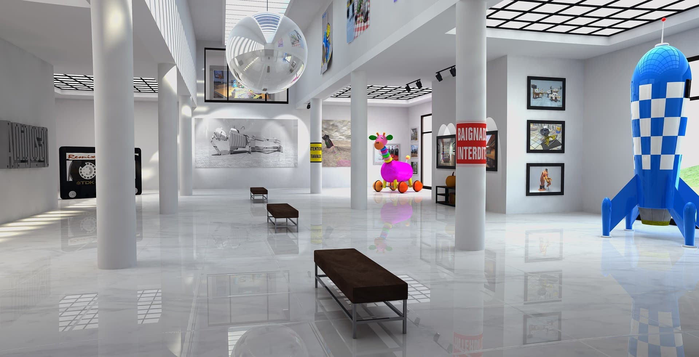

Opening hours
Come when curiosity strikes
- Monday
- Closed
- Tuesday
- 10:00 – 16:00
- Wednesday
- 10:00 – 16:00
- Thursday
- 10:00 – 16:00
- Friday
- 10:00 – 19:00
- Saturday
- 9:00 – 16:00
- Sunday
- 9:00 – 13:00
Visit
The museum is free to enter and full of interactive exhibits for curious kids, families, school groups, and anyone ready to explore science hands-on.

Opening hours
Entry is free for everyone, making science accessible for the whole community.
Tours leave every hour and include a printed guide to help families explore the museum.
The museum has wheelchair ramps, audio guides, and braille display signs.
Enjoy light lunches, drinks, snacks, gifts, memorabilia, and activity packs.
Good to know
Many exhibits are designed to be touched, tested, and played with, making the museum ideal for children and families.
If you want to organise a guided tour for a group, contact the museum in advance to arrange a suitable time.
Visit the shop for gifts and activity packs that let children keep exploring science after they leave.
Find us
Visit us at Kjelsåsveien 143, 0491 Oslo, Norway. The museum is located near Kjelsås and is easy to find for families, school groups, and curious explorers.
Contact us